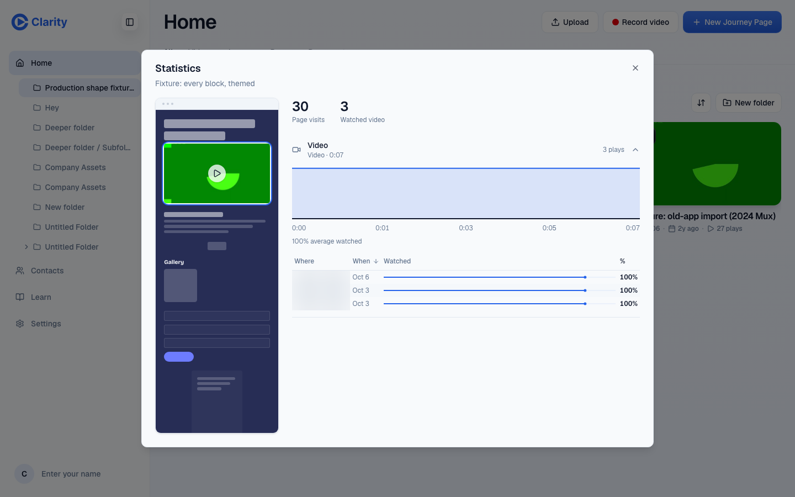

Prospect-page tracking: delete the dead events, count submits on the server, add a viewer id
Public page tracking script, page-events worker, page stats. A per-page viewer id on prospect pages is a privacy call.
Three changes. Delete section_view, section_dwell, scroll_depth and return_visit from the server, the schema docs and the stats UI; no client code has ever sent them. Record page_form_submit in the worker after the submission row is written, instead of on the browser's submit event, so the event count equals the stored rows. Store a random viewer id per page in the prospect's browser (localStorage, scoped to the share id, no cookie, no cross-site use) and send it with page_view; "Returned" then appears in page stats from existing rows. Scroll depth is never built: dwell and video progress already say what was seen.
The problem
Page stats promise section views, scroll depth and return visits, and have zero rows of each ever. Form submits are counted in the browser before the server accepts anything, so the event count and the stored rows disagree in both directions. Every visit mints a new session id and sends viewer_id: null, so nothing can say that a prospect came back, which is the signal a rep would call on.
What it would look like
No screen changes except one new fact in page stats ("Returned 2 times") once viewer ids exist. The before shot shows what reps see today.

What the data says
page_event rows by type
| Event | All accounts, all time | Customer, all time | Customer, last 90 days |
|---|---|---|---|
| page_view | 15,012 | 14,173 | 8,442 |
| page_unload | 8,300 | 7,760 | 4,394 |
| page_cta_click | 1,138 | 1,111 | 784 |
| page_form_submit | 65 | 58 | 22 |
| section_view, section_dwell, scroll_depth, return_visit | 0 | 0 | 0 |
Since 2026-05-11. renderer_version is public-page-v1 on every row. viewer_id is NULL on all 24,515 rows. 15,010 of 15,011 sessions hold exactly one page_view.
Form submit events vs stored submissions, customer pages, by month
| Month | page_form_submit events | Stored rows |
|---|---|---|
| 2026-05 | 3 | 7 |
| 2026-06 | 30 | 17 |
| 2026-07 | 7 | 7 |
| 2026-08 | 13 | 13 |
| 2026-09 | 2 | 0 |
| 2026-10 | 3 | 1 |
May rows were written by the old app, which emitted no events. June has more events than rows because the client fires on DOM submit before the POST succeeds (render-client-script.ts:223-226). The 401-vs-65 figure in the audit compares all accounts and all time; the monthly view shows the mechanism.
Why the four types never fire, from the code: the server accepts seven types (page-events.ts:35-43); the tracking script emits page_view (render-client-script.ts:213), page_cta_click (217), page_form_submit (225) and page_unload (355). No call emits a section event; the only IntersectionObserver (61-62) warms the video player. Nothing sets scroll_depth_pct. The script hard-codes viewer_id: null (195) and mints a session id per load (185-187). Dwell on page_unload: median 32 s, p90 1,898 s (tabs left open).
Options
Removes a promise the product cannot keep, fixes the count at its source, and gets "returned" from rows that already exist.
An observer per section and a scroll listener, new rows per visit, and a stats UI to show them. No rep has asked for it, and video progress already covers the video.
Honest, but leaves the submit miscount and no return signal.
Questions for William
Recommended: Yes.
Recommended: Yes, as localStorage scoped to the share id with no cookie and no cross-page use. If William wants zero client storage on prospect pages, "returned" stays unbuilt and the answer to question 1 covers it.
Recommended: Yes. The stored row is the truth; the event is for the stats timeline.
PRs once decided
page-events.ts accepted types, docs and any stats UI copy that mentions sections or scroll. Columns stay (no migration). Evidence: a planted section_view is rejected with 400.
lead-capture.ts writes page_form_submit after the insert; the client stops sending it. Evidence on the PR preview: one submit, one row, one event.
render-client-script.ts stores and sends the id; page-events.ts accepts it; page stats add "Returned n times" (after U07). Evidence: two visits in the preview, stats show returned.